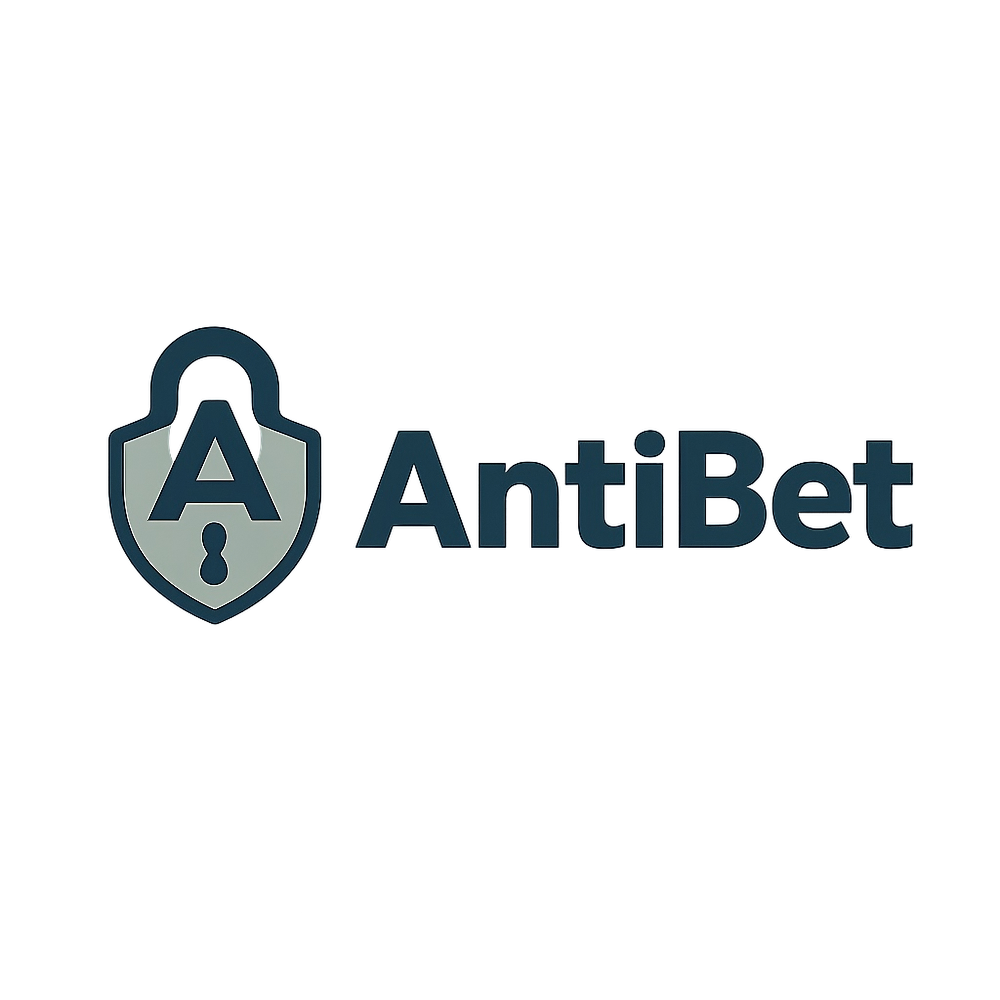

Saúde digitalAntiBet
Sistema de prevenção comportamental e escudo inteligente contra o vício em apostas.
Destaque Técnico: Clean Architecture, DDD, Flutter, FastAPI/Python, PostgreSQL, Redis e IA orientada a risco comportamental.
Um ecossistema premium de produtos digitais que combina posicionamento institucional, experiência de SaaS e impacto real em saúde, automação e produtividade.
Foco
Autoridade institucional com percepção premium.
Conversão
Estrutura pensada para parceiros e investidores.
Portfólio
Produtos claros, organizados e visualmente fortes.
Posicionamento
A Inovexa integra tecnologia, ética e experiência de produto para apresentar um portfólio crível, sofisticado e preparado para relações institucionais de longo prazo.
Sinais de maturidade
Ecossistema
Cada card combina resumo institucional, destaque técnico e hierarquia visual para apoiar leitura rápida e confiança.

Saúde digitalSistema de prevenção comportamental e escudo inteligente contra o vício em apostas.
Destaque Técnico: Clean Architecture, DDD, Flutter, FastAPI/Python, PostgreSQL, Redis e IA orientada a risco comportamental.
Plataforma desktop para automação de afiliados inteligentes e escala comercial.
Destaque Técnico: geração de conteúdo, recomendações, atendimento e publicações automatizadas com foco em performance.
Aplicativo emocional com escuta empática e presença acolhedora.
Destaque Técnico: Claude Haiku 3.5 via Amazon Bedrock, memória contextual e arquitetura serverless com Flutter.
Próximo passo